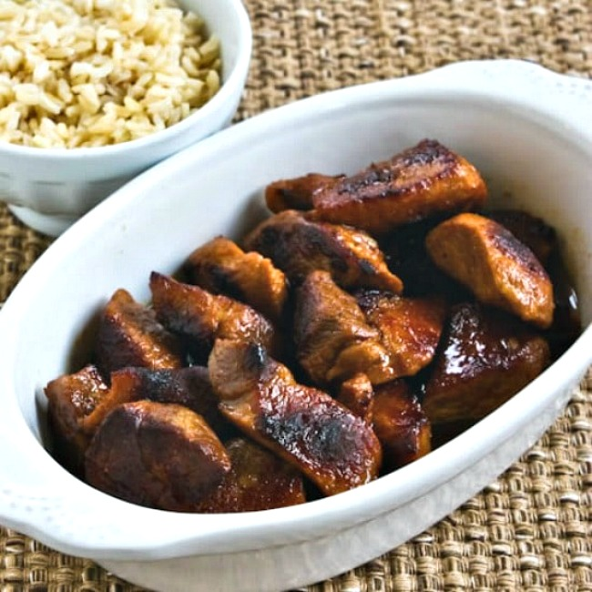

Pork Adobo (No Sugar)

Quick Filipino Style Adobo
This is a simplified and carb free version of a Filipino dish. There's nothing wrong with the original, but for those of use who need something quick and easy, but still carb free, this recipe will offer a tasty solution.
Thankfully, this is a fairly simple recipe. Let's dive in!
Ingredients
We only need a few basic things to get started. I would suggest using pork belly if you can find it, but if not, pork shoulder blade steak is a common thing to find in American grocery stores and is a tender, juicy alternative.
We're going to need pork (you could use chicken instead), soy sauce and wine vinegar. A fresh lime is optional. To recap, those ingredients are;
- Pork belly (or appropriate substitute)
- Skillet, preferably non-stick
- Soy sauce
- Wine vinegar (white or red)
- Fresh lime/juice (optional)
Steps
- Cut up meat into bite size chunks.
- Place meat into pan and put on medium heat.
- Add just a few (2-4) spashes of soy sauce, depending on how much meat you're using. Don't use too much, as it is really salty.
- Add 1 or 2 splashes of vinegar (you want 1 part vinegar to 2 parts soy sauce)
- (Optional) Add a few squirts of lime juice.
- Stir the meat around in the pan to ensure every piece soaks up some of the flavor.
- Let it cook thoroughly over medium heat.